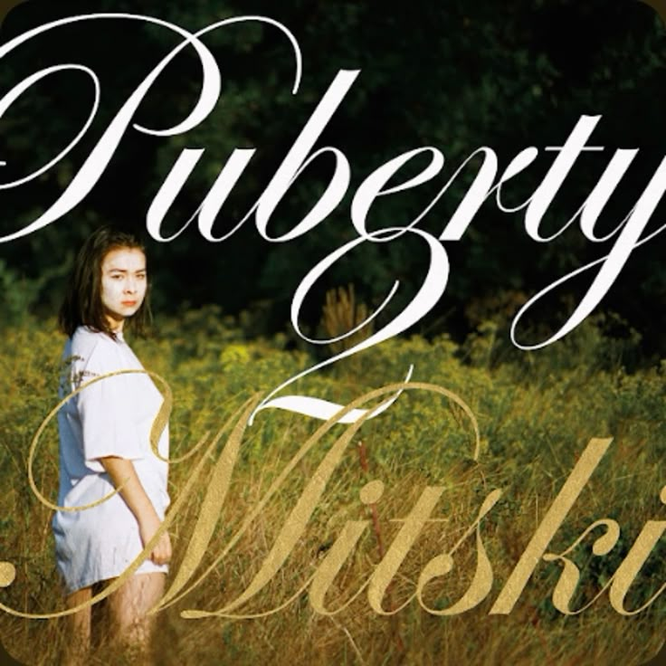

Puberty 2 (2016)Puberty 2 adalah album studio keempat dari musisi indie rock Amerika Serikat, Mitski, yang dirilis pada 17 Juni 2016 melalui label Dead Oceans. Album ini ditulis dan diproduseri oleh Mitski bersama produser lama kolaboratornya, Patrick Hyland. Album ini melanjutkan eksplorasi musikal Mitski dengan perpaduan antara distorsi gitar yang tajam, melodi pop yang minimalis, dan dinamika emosi yang kontras. Puberty 2 mendapat pujian luas dari kritikus dan dianggap sebagai salah satu karya terkuat Mitski, sekaligus memperluas pengaruhnya di kancah musik indie internasional. Album ini dikenal karena liriknya yang tajam dan reflektif, membahas tema alienasi, tekanan sosial, cinta yang tidak seimbang, dan pergulatan identitas diri. Beberapa lagu yang paling menonjol dari album ini antara lain "Your Best American Girl", "Happy", "A Loving Feeling", dan "Fireworks". Berkat keberanian artistiknya dan resonansi emosionalnya yang kuat, album ini mengukuhkan posisi Mitski sebagai salah satu penulis lagu paling berpengaruh di generasinya. |